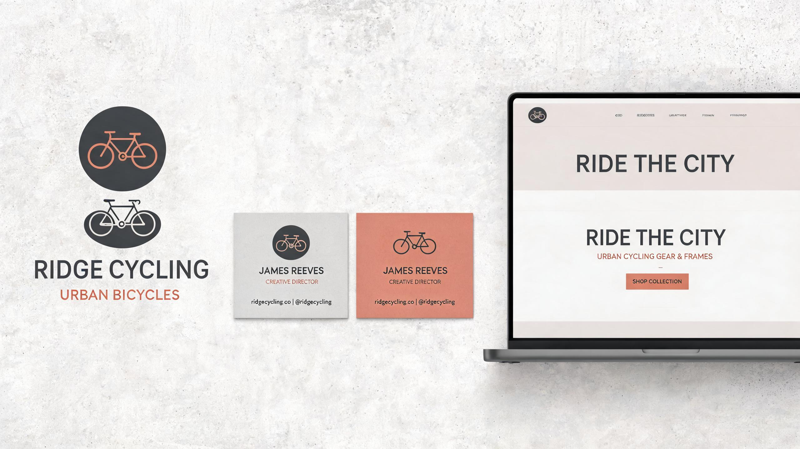

项目背景
城市骑行是一个新兴的城市骑行社群品牌，倡导以自行车重新发现城市。品牌需要一套既能体现运动活力，又不失都市精致感的视觉识别系统，同时需要一套响应式官网来展示活动、装备与社群故事。
设计思路
品牌标志以自行车的几何轮廓为灵感，提炼出简洁的圆形与直线构成，象征车轮、道路与城市的连接。色彩上采用大地色系中的暖灰与赭石色，呼应骑行时遇到的城市肌理：混凝土、砖墙与夕阳。
网站设计以大幅影像为主导，搭配克制的排版与充足的留白。首页采用全屏视频背景与精简文案，让用户第一眼就能感受到骑行的自由氛围。产品页与活动页则通过清晰的网格系统组织信息，确保在不同设备上都能快速浏览。
设计过程
项目从品牌策略工作坊开始，与客户共同明确了“连接、探索、城市”三个核心关键词。随后我完成了超过 30 个标志草图，最终选定最简洁、最具延展性的几何方案。
网站开发采用响应式优先策略，在移动端将导航收敛为底部标签栏，优化单手操作体验。上线首月，官网访问量超过 12,000 次，活动报名转化率达到了 18%。